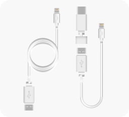

Open WhatsApp, tap Menu>Settings>Account>Two-step verification, choose "Disable" and confirm it.
1) Update Google Play services.
2) Login to Google Account in Google Play Store.
OTG cable is used to connect your iPhone and Android device. So OTG cable can be a USB-c to lightning cable, or be composed of a USB cable and one OTG.
Under the normal circumstance of Whatsapp transfer, Wutsapper only needs a verification code 2-3 times. Just in case, if you ask for a verification code over 6 times within one day, Whatsapp might take 12 hours or longer time to send you the verification code again. The verification code is restricted strictly by Whatsapp policy, so please use the verification code with caution.
The download key is affected by network conditions, so please try to download it again while the network is stable. If the downloaded key is still invalid after multiple attempts, please try the desktop version: https://mobiletrans.wondershare.com/whatsapp-transfer-backup-restore.html
The transmission process may take a while. If the transmission get stuck, please wait patiently for a while.If the process get stuck for long time, please click on the link below to contact our customer service: http://support.wondershare.com/en/contact/10
Since iOS and Android devices are connected, Android will automatically charge iOS. Thus, fully charging two devices before the transfer is better.
In the trial, the first 50 messages sorted by time in WhatsApp chat history are transferred.
The purchase/subscription failing might be because that your Google account is not bound with a credit card. So please check your Google account in Google Store.
The valid period of the Wutsapper license is one year starting from the purchased date.
Wutsapper could be used for an unlimited number of devices.
Our development team can assure that we will not keep or take any of your Whatsapp information. Wutsapper just help you to transfer your WhatsApp data from Android to iOS directly.